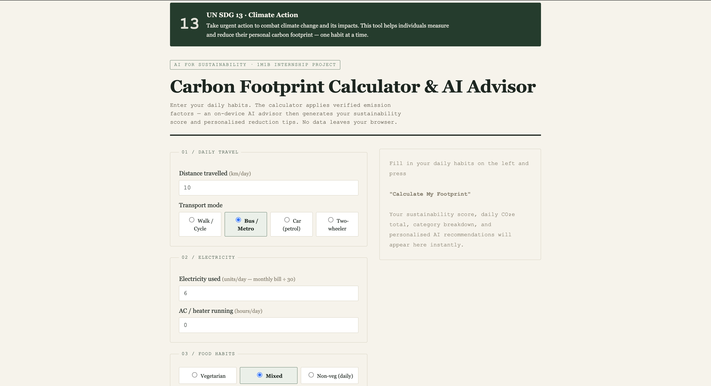
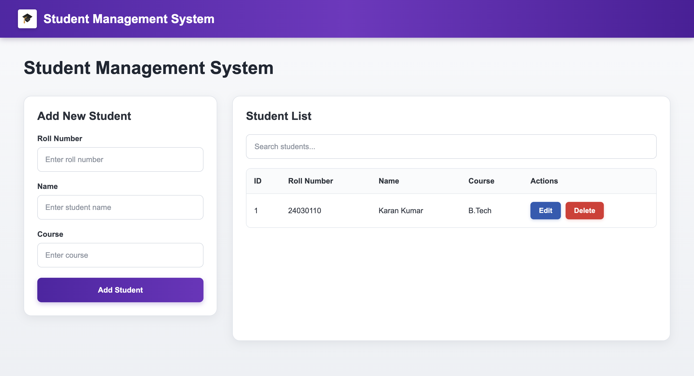
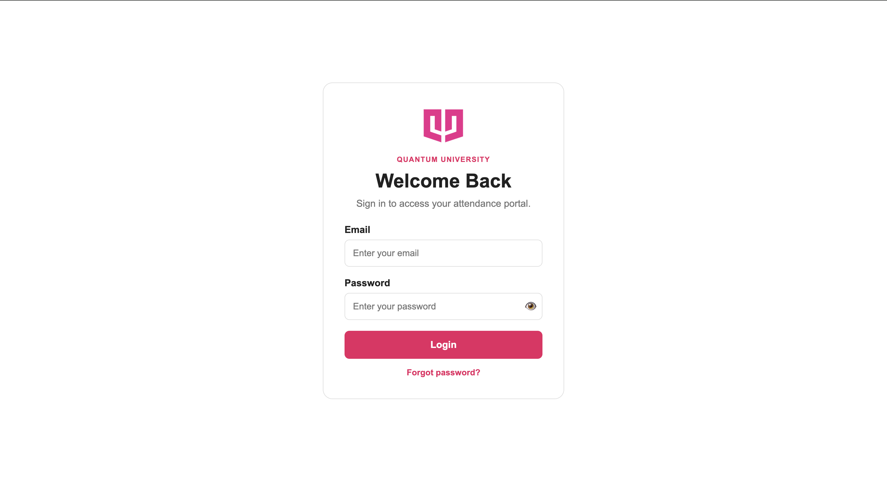

Third-year Computer Science student,
building strong foundations in software development.
I enjoy understanding what happens beneath the interface — from algorithms and data structures to backend logic and machine learning fundamentals.
I'm a third-year B.Tech Computer Science & Engineering student specializing in AI & ML at Quantum University. Java is my primary language, and I also work with C++, Python, C, and SQL. I'm focused on building strong fundamentals in data structures, algorithms, backend development, and problem solving.
Drop a file named myphoto.png into this same folder (next to index.html) and it'll show up here automatically.
What I work with.
- Java Primary
- C++ STL / Memory
- Python Scripting
- C Procedural
- SQL Relational DB
- Graph Theory Dijkstra / BFS / DFS
- Dynamic Programming Memoization
- Trees & Heaps Traversal
- Recursion Backtracking
- Complexity Big-O
- Git & GitHub Version control
- OOP Java
- Multithreading Java
- Pandas / NumPy Python
- Scikit-Learn Python
Projects I've built.

Carbon Footprint Calculator
A tool that estimates a household or individual's carbon footprint from everyday inputs — travel, energy, and consumption — and turns the number into something actionable.
View on GitHub

Student Management System
A Java OOP application for managing student records — enrollment, grades, and attendance — built around a clean, extensible class architecture rather than a quick script.
View on GitHub

QAttend Portal
A role-based attendance management system built for managing student attendance across multiple sections. Admins can manage students, subjects, and CR accounts, while CRs can access and manage only their assigned section.
View on GitHub
Practice, pulled live — not typed in by hand.
This section connects to a small backend that reads your LeetCode profile. The solved count and practiced topics update automatically when the backend is running.
Live LeetCode topic counts will appear here when the portfolio backend is running.
Where this is headed.
Started B.Tech CSE (AI/ML)
Enrolled at Quantum University. Built the foundation in C, data structures, and discrete math.
Moved into Java & algorithms
Made Java my primary language. Deepened DSA practice — graphs, DP, trees — alongside C++ and Python.
Third year — consistent practice
Built the Carbon Footprint Calculator and Student Management System while continuing regular DSA practice on LeetCode.
Graduating — open to opportunities
Targeting roles at the intersection of backend systems (Java) and applied ML.